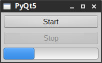
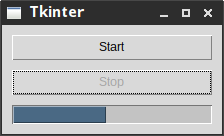
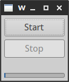
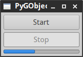

<!doctype html>
<html>
	<head>
		<meta charset="utf-8">
		<meta name="viewport" content="width=device-width, initial-scale=1.0, maximum-scale=1.0, user-scalable=no">

		<title>reveal.js</title>

		<link rel="stylesheet" href="css/reveal.css">
		<link rel="stylesheet" href="css/theme/night.css">
        
        <style media="screen" type="text/css">
        .reveal {
            font-size: 32px;
        }
        .reveal pre code {
            max-height: 650px;
        }
        </style>
        

		<!-- Theme used for syntax highlighting of code -->
		<link rel="stylesheet" href="lib/css/zenburn.css">

		<!-- Printing and PDF exports -->
		<script>
			var link = document.createElement( 'link' );
			link.rel = 'stylesheet';
			link.type = 'text/css';
			link.href = window.location.search.match( /print-pdf/gi ) ? 'css/print/pdf.css' : 'css/print/paper.css';
			document.getElementsByTagName( 'head' )[0].appendChild( link );
		</script>
	</head>
	<body>
		<div class="reveal">
			<div class="slides">
                
                
<!--------------------------------------------------------------------------------------------------------------->
                <section data-markdown>
					<script type="text/template">
                        # Python GUI programming
                        
                        #### for command-line geeks (and others as well) 
                        <p>&nbsp;</p>
                        <small>Created by <a href="mailto:skontar@redhat.com">Stanislav Kontar</a></small>                         
					</script>
				</section>
                <!--------------------------------------------------------------------------------------------------------------->
				<section data-markdown>
					<script type="text/template">
                        ## GUI building blocks
                        
                        * Widgets                            <!-- .element: class="fragment" data-fragment-index="1" -->
                        * Layout managers                    <!-- .element: class="fragment" data-fragment-index="2" -->
                        * Callbacks                          <!-- .element: class="fragment" data-fragment-index="3" -->
                        * Event loop                         <!-- .element: class="fragment" data-fragment-index="4" -->
					</script>
				</section>
                <!--------------------------------------------------------------------------------------------------------------->
				<section data-markdown>
					<script type="text/template">
                        ## GUI frameworks
                        
                        Libraries based on the underlying OS, such as Qt, Gtk+, WinAPI... 
                        
                        ...or you can use cross-platform toolkits.                                  <!-- .element: class="fragment" data-fragment-index="1" -->
					</script>
				</section>
                <!--------------------------------------------------------------------------------------------------------------->
				<section data-markdown>
					<script type="text/template">
                        ## Cross-platform toolkits
                        
                        | Toolkit       | Underlying language | Python wrapper |
                        |---------------|---------------------|----------------| 
                        | **Tk**        | Tcl extension       | tkinter        |
                        | **wxWidgets** | C++                 | wxPython       |
                        | **Qt5**       | C++                 | PyQt5          | 
                        | **Gtk+ 3**    | C                   | PyGObject      |
                        
					</script>
				</section>
                <!--------------------------------------------------------------------------------------------------------------->
				<section data-markdown>
					<script type="text/template">
                        ## tl;dr
                        
                        So which one is the best?
                        <ul> 
                        <li>It depends</li>                                                                         <!-- .element: class="fragment" data-fragment-index="1" -->
                        <small>You saw that coming, did not you ☺</small>                                           <!-- .element: class="fragment" data-fragment-index="2" -->
                        <li>They all have advantages and disadvantages</li>                                         <!-- .element: class="fragment" data-fragment-index="3" -->
                        <li>It depends on the target platform...</li>                                               <!-- .element: class="fragment" data-fragment-index="4" -->
                        <small>Wait a minute, did not you just say "cross-platform" on the previous slide?</small>  <!-- .element: class="fragment" data-fragment-index="5" -->
                        <li>...and there are other zillion things to consider</li>                                  <!-- .element: class="fragment" data-fragment-index="6" -->
                        </ul>
                        
					</script>
				</section>
                <!--------------------------------------------------------------------------------------------------------------->
				<section data-markdown style="text-align: left;">
					<script type="text/template">
                        <h2 style="text-align: center;">tkinter</h2>
                        

                        ### Advantages
                        + Included in standard Python library
                        + Simple to learn the basics
                        + Small footprint 
                                             
                        <p>&nbsp;</p>
                        
                        ### Disadvantages
                        + Not all expected widgets are there (some added to Ttk)
                        + Sometimes ugly and look & feel not matching target platform
                        + Weird structure (Tcl) and documentation
					</script>
				</section>
                <!--------------------------------------------------------------------------------------------------------------->
				<section data-markdown style="text-align: left;">
					<script type="text/template">
                        <h2 style="text-align: center;">wxPython</h2>
                        
                        
                        ### Advantages
                        + Always uses underlying platform
                        + Complex demos and examples
                        + Extended with complex widgets
                        
                        <p>&nbsp;</p>
                        
                        ### Disadvantages
                        + Lot of quirks which need to be hacked
                        + Not Python 3 ready yet
                        + Slow library development
					</script>
				</section>
                <!--------------------------------------------------------------------------------------------------------------->
				<section data-markdown style="text-align: left;">
					<script type="text/template">
                        <h2 style="text-align: center;">PyQt5</h2>
                        
                        
                        ### Advantages
                        + Mature design and documentation
                        + HTML + CSS, resource system
                        + Perfect look & feel on Qt based desktops<br> and Windows
                        
                        <p>&nbsp;</p>
                        
                        ### Disadvantages
                        + GPL license or commercial one (however PySide2 announced)
                        + Glitches on Gtk based desktops (seems to be fixed now)
                        + Not matching look & feel on Gtk based desktops
					</script>
				</section>
                <!--------------------------------------------------------------------------------------------------------------->
				<section data-markdown style="text-align: left;">
					<script type="text/template">
                        <h2 style="text-align: center;">PyGObject</h2>
                        
                        
                        ### Advantages
                        + Based on Gtk3
                        + Good integration with Gtk based desktops
                        + Widget constructors extended using<br/> GObject Introspection
                        
                        <p>&nbsp;</p>
                        
                        ### Disadvantages
                        + Lacking documentation 
                        + A lot of deprecated stuff still used by desktops
                        + Gtk3 is constantly changing
					</script>
				</section>
                <!--------------------------------------------------------------------------------------------------------------->
				<section data-markdown>
					<script type="text/template">
                    ## Things to consider
                    + Mathplotlib integration – library for Matlab like plots
                    + OpenGL integration – for adding a 3D view as a widget
                    + Resource system – for packing icons etc.
                    + Styles – for changing fonts, adding links etc.
                    <p></p>
                    
                    | Library         | Matplotlib | OpenGL     | Resource | Styles                 |
                    |-----------------|------------|------------|----------|------------------------| 
                    | **tkinter**     | Yes        | Not really | No       | Internal               |
                    | **wxPython**    | Yes        | Yes        | Kind of  | Internal               |
                    | **PyQt5**       | Yes        | Yes        | Yes      | HTML + CSS             |
                    | **PyGObject**   | Yes        | Not really | No       | HTML + CSS             |  
                    
					</script>
				</section>
                <!--------------------------------------------------------------------------------------------------------------->
				<section data-markdown>
					<script type="text/template">
                    ## Long running tasks
                    <ul>
                    <li>When callback runs too long...</li>                                                      <!-- .element: class="fragment" data-fragment-index="1" -->
                    <li>...it blocks event loop from running, events are not processed, GUI freezes</li>         <!-- .element: class="fragment" data-fragment-index="2" -->
                    <li>You solve it by creating a thread for long running task</li>                             <!-- .element: class="fragment" data-fragment-index="3" -->
                    <li>Then you get a great idea of updating progress bar from the running task...</li>         <!-- .element: class="fragment" data-fragment-index="4" -->
                    <li>...and you application crashes, because GUI libraries are usually not thread safe</li>   <!-- .element: class="fragment" data-fragment-index="5" -->
                    <li>You need to use event queue to send signal to main GUI thread</li>                       <!-- .element: class="fragment" data-fragment-index="6" -->
                    <li>Each library has its own mechanism to do so</li>                                         <!-- .element: class="fragment" data-fragment-index="6" -->
                    </ul>
					</script>
				</section>
                <!--------------------------------------------------------------------------------------------------------------->
 				<section data-markdown>
					<script type="text/template">
                    ## Code show 
                    ```
                    from gi.repository import Gtk

                    class Window(Gtk.Window):
                        def __init__(self, *args, **kwargs):
                            super().__init__(*args, **kwargs)
                            self.set_border_width(5)

                            # Widgets
                            self.button = Gtk.Button('Test')

                            # Layout
                            self.box = Gtk.Box()
                            self.box.pack_start(self.button, True, True, 0)
                            self.add(self.box)

                            # Callbacks
                            self.connect('delete-event', Gtk.main_quit)
                            self.button.connect('clicked', self.on_button)

                            self.show_all()

                        def on_button(self, button):
                            print('PyGObject callback')

                    win = Window()
                    Gtk.main()
                    ```
					</script>
				</section>
                <!--------------------------------------------------------------------------------------------------------------->
 				<section data-markdown>
					<script type="text/template">
                    ## The end is near...
                    <small>See my repo for example code: [https://github.com/skontar/python-gui](https://github.com/skontar/python-gui)</small>
                    <br><br>
                    #### Questions?
					</script>
				</section>
                <!--------------------------------------------------------------------------------------------------------------->                
 				<section data-markdown>
					<script type="text/template">
                    ## References
                    <small>
                    + tkinter
                        + https://docs.python.org/3.5/library/tkinter.html
                        + http://www.tkdocs.com/index.html
                        <br><br>
                    + wxPython
                        + https://wxpython.org/
                        + https://wxpython.org/onlinedocs.php
                        + https://wxpython.org/Phoenix/docs/html/main.html
                        <br><br>
                    + PyQt
                        + https://www.riverbankcomputing.com/software/pyqt/intro
                        + http://pyqt.sourceforge.net/Docs/PyQt5/
                        + http://wiki.qt.io/PySide2
                        <br><br>
                    + PyGObject      
                        + https://wiki.gnome.org/Projects/PyGObject
                        + http://lazka.github.io/pgi-docs/
                        
                    </small>
					</script>
				</section>
                <!--------------------------------------------------------------------------------------------------------------->                    
			</div>
		</div>

		<script src="lib/js/head.min.js"></script>
		<script src="js/reveal.js"></script>

		<script>
			// More info https://github.com/hakimel/reveal.js#configuration
			Reveal.initialize({
				history: true,
                slideNumber: true,

				// More info https://github.com/hakimel/reveal.js#dependencies
				dependencies: [
					{ src: 'plugin/markdown/marked.js' },
					{ src: 'plugin/markdown/markdown.js' },
					{ src: 'plugin/notes/notes.js', async: true },
					{ src: 'plugin/highlight/highlight.js', async: true, callback: function() { hljs.initHighlightingOnLoad(); } }
				]
			});
		</script>
	</body>
</html>
